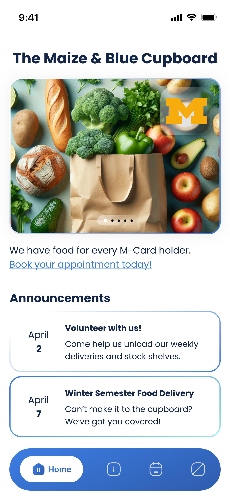
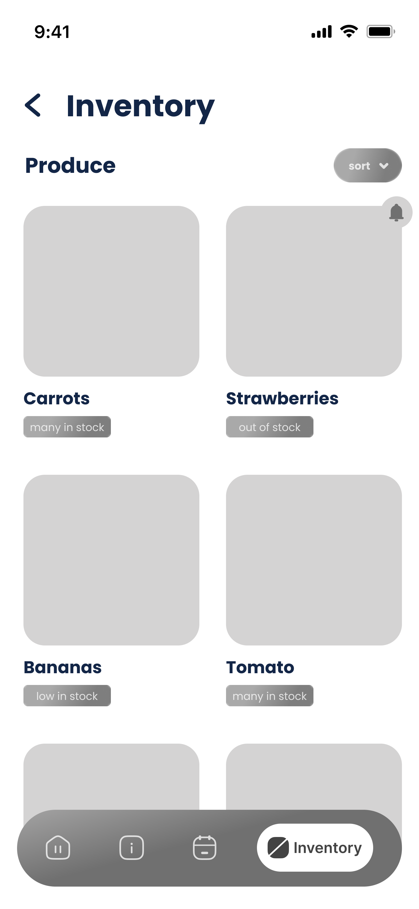
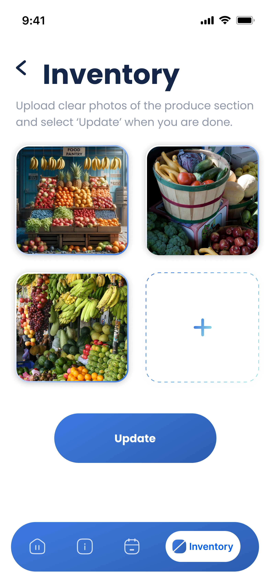
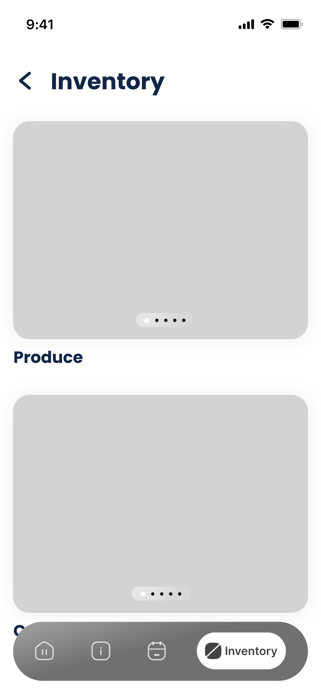
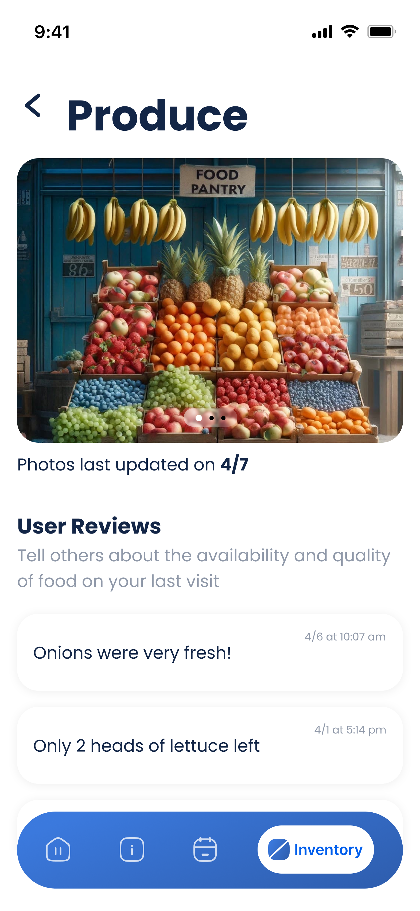

Enhancing quiz visibility and refining task prioritization


- User testing revealed that we needed to make the eligibility quiz’s purpose more obvious, so we moved it to its own individual page and added a clear label (‘Eligibility Quiz’).
- Users would also rather be prompted to book an appointment (a task that is applicable to all users) than be given the location of the pantry (information that only first-time users may need).
Streamlining inventory tracking to reduce employee workload



- The inventory solution addressed user concerns but created a heavy cognitive burden for the lone food pantry employee (Yes, there was only 1!).
- We revised the solution to reduce the employee's workload by allowing them to upload photos of the inventory (as opposed to categorizing every item as ‘many’, ‘low’, or ‘out of stock’), enabling users to confirm the availability of items themselves.
Clarifying inventory updates with contextual phrasing




- The photo-based inventory updates were often perceived as irrelevant stock photos.
- So we further revised the design solution to include phrases like “See the latest Produce photo updates” or “Photos last updated on 4/7”
Next Steps (Potentially)
➔
Researching transferability for other pantry systems similar to the Maize & Blue Cupboard.
➔
Explore the addition of artificial intelligence as a tool for scanning inventory photos to provide users with even more up-to-date stock information.
My Big Learnings
➔
Consider all stakeholders. Like with the inventory page, what the users preferred was different that what was feasible for the food pantry employee to manage. It was important to learn that the product has to be usable and easy for not just the majority but for all.
➔
Don’t limit yourself! When we first started brainstorming, we only ideated on digital solutions. However, we realized that some problems have better analog solutions (linked in the brainstorming document!). Just because there isn’t a pretty UI that goes along with it, doesn’t mean that it isn’t a worthy solution.
➔
Lastly, I also learnt the importance of empathy-driven design that particularly helps unfold insights from psychologically charged topics like guilt and shame.


As part of our research, we aimed to observe, engage, and immerse users. While surveys and interviews covered observation and engagement, we planned to use contextual inquiry for immersion in the pantry environment.